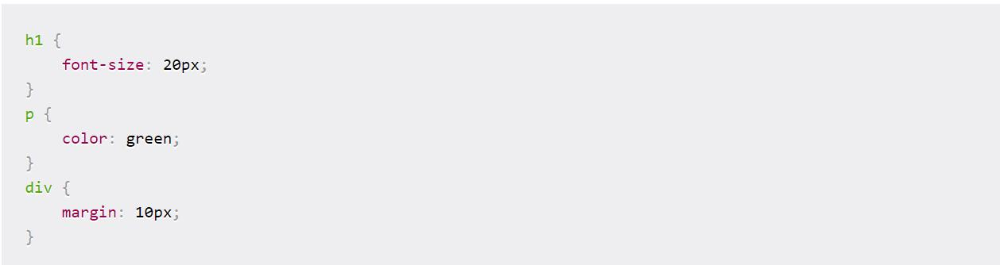
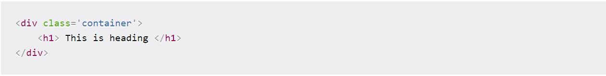
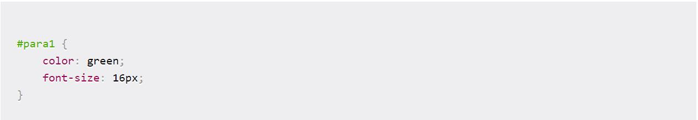
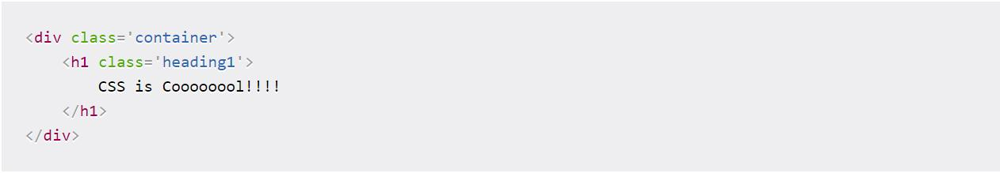
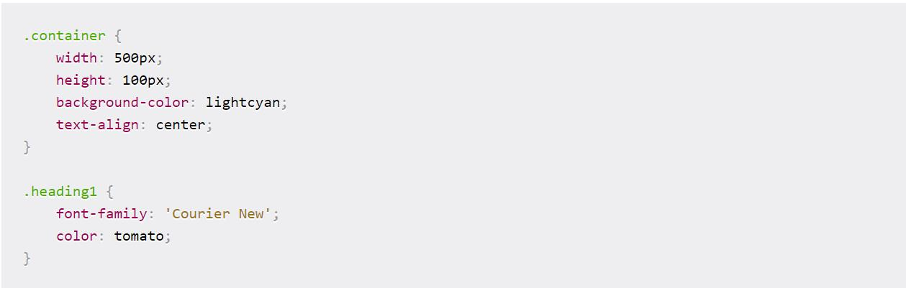
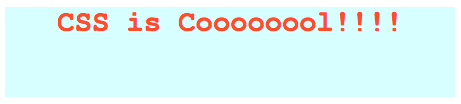

CSS (каскадні таблиці стилів) - це те, що робить веб-сторінки гарними та презентабельними. Це важлива частина сучасної веб-розробки та необхідна майстерність для будь-якого веб-дизайнера та розробника.
Починаємо
Почнемо з того, як ми можемо включати CSS у наші проекти. Зазвичай це три способи.
1. Вбудований CSS
По-перше, ми можемо включити CSS безпосередньо в наші елементи HTML. Для цього ми використовуємо атрибут style, а потім надаємо йому властивості.
Тут ми надаємо йому властивість color та встановлюємо значення blue, що призводить до наступного:
Ми також можемо встановити декілька властивостей всередині тегу style, якщо хотіли.
Однак я не хочу продовжувати цей шлях, оскільки все починає псуватися, якщо наш HTML
забитий безліччю CSS всередині нього.
Саме тому було введено другий метод включення CSS.
2. Внутрішній CSS
Інший спосіб включити CSS - це використання елемента style у розділі head документа HTML.
Це називається внутрішнім стилем.

У елементі стилю ми можемо надати стилістику нашим елементам HTML, вибравши елемент(и) та надавши атрибути стилізації.
Так само, як ми застосували властивість color до елемента h1 вище.
3. Зовнішній CSS
Третій і найбільш рекомендований спосіб включити CSS - це використання зовнішнього таблиці стилів.
Ми створюємо таблицю стилів з розширенням .css і включаємо її посилання в HTML-документ, наприклад:
У наведеному вище коді ми включили посилання файлу style.css за допомогою елемента link.
Потім ми записуємо всі наші CSS в окрему таблицю стилів під назвою style.css, щоб вона була легко керованою.
Цей аркуш стилів можна також імпортувати в інші файли HTML, тому це чудово підходить для повторного використання.
CSS Селектори
Як ми говорили раніше, CSS - це мова дизайну, яка використовується для стилювання елементів HTML. А для того, щоб стилізувати елементи, спочатку потрібно їх вибрати. Ви вже бачили короткий вигляд того, як це працює, але давайте заглибимось трохи глибше у селектори CSS, і подивимось на три різні способи вибору елементів HTML.
1. Елемент
Перший спосіб вибору елемента HTML - це просто за допомогою імені, як ми робили вище. Подивимося, як це працює:
Наведений вище приклад легко зрозуміти. Ми вибираємо різні елементи на зразок h1, p, div та надаємо їм різні
атрибути стилю.font-size керує розміром тексту, color встановлює колір тексту,
а margin додає проміжки навколо елемента.
2. Клас
Ще один спосіб вибору елементів HTML - це використання атрибута класу. У HTML ми можемо призначити нашим елементам різні класи. Кожен елемент може мати кілька класів, і кожен клас також може бути застосований до декількох елементів.
Давайте подивимось на це:

У наведеному вище коді ми призначили елемент container елементу div.
У таблиці стилів ми вибираємо наш клас у форматі .className і надаємо йому 10px запас.
3. Ідентифікатор
Як і класи, ми також можемо використовувати ідентифікатори, щоб вибрати елементи HTML і застосувати до них стиль. Єдина відмінність класу від ідентифікатора полягає в тому, що один ідентифікатор може бути призначений лише одному HTML-елементу.


Наведений вище приклад показує, як ми присвоюємо ідентифікатор елементу абзацу, а пізніше використовуємо селектор ідентифікаторів у таблиці стилів, щоб вибрати абзац і застосувати до нього стиль
Шрифти та кольори
CSS надає нам буквально сотні варіантів бавитися із шрифтами і кольорами та зробити наші елементи HTML гарними. Ми можемо вибрати два типи шрифтів:
1. Generic Family: група сімейств шрифтів із подібним виглядом (наприклад, "Serif" або "Monospace")
2. Font Family: певна сім'я шрифтів (наприклад, "Times New Roman" або "Arial")
Для кольорів ми можемо використовувати попередньо визначені назви кольорів або значення RGB, HEX, HSL, RGBA, HSLA.


Як ви бачите у наведеному вище прикладі, у нас є елемент div з класом container.
Всередині цього діва є тег h1 з деяким текстом всередині нього.
У таблиці стилів ми вибираємо клас контейнера та встановлюємо його width, height,
background-color та text-align.
Нарешті, ми вибираємо клас .heading1 - який застосовується до тегу h1 -
і надаємо йому атрибути font-family і color.
Висновок
На перший погляд може здатися, що це все не можливо запам'ятати, але не хвилюйтеся. Більше практики і все стане просто.
Додаткова література